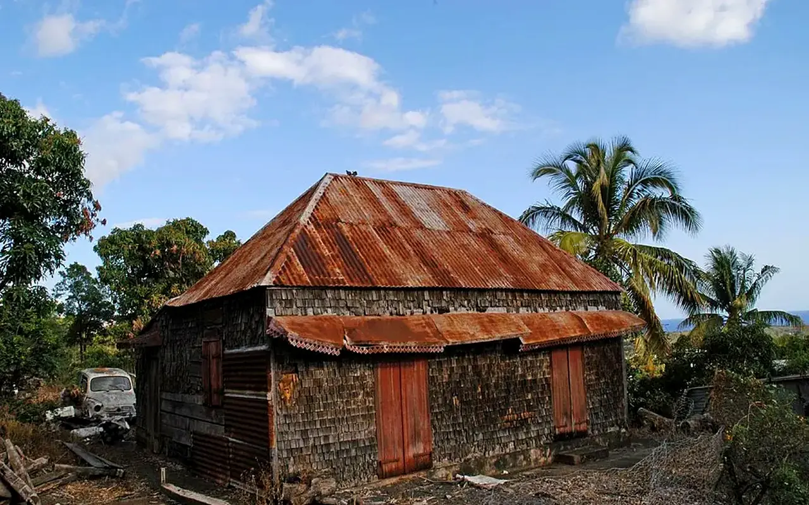

Parcours public
Propriétaires et biens vacants
Un propriétaire peut conserver la pleine propriété de son bien tout en étudiant avec TVF une remise en usage utile au territoire, sous réserve de diagnostic, faisabilité, financement et convention.

Un cadre pour les biens qui ont un potentiel d'utilité territoriale
TVF peut étudier des situations concernant un logement vacant, un immeuble dégradé, un commerce fermé, un bâtiment inutilisé ou un terrain abandonné. L'objectif n'est pas de remplacer le propriétaire, mais de construire une cooperation lorsque le bien peut redevenir utile aux habitants.
Biens concernes
Logements vacants, locaux commerciaux fermes, bâtiments inutilisés, immeubles à rénover, terrains délaissés ou espaces pouvant accueillir un usage temporaire.
Propriete conservee
Le propriétaire garde son bien. Toute utilisation par TVF ou un tiers doit être encadrée par une convention ecrite, datee et limitée.
Projet utile
Le bien doit pouvoir répondre à un besoin local : logement solidaire, local associatif, activité de proximité, formation, atelier partage ou service aux habitants.
Accompagner, coordonner et rechercher des solutions réalistes
Diagnostic initial
Collecter les informations disponibles : adresse, état apparent, occupation, contraintes connues, photos, documents transmis et besoin local.
Mobilisation
Rechercher les acteurs utiles : collectivité, bénévoles, entreprises, artisans, associations, mécène ou financeur potentiel.
Ressources
Etudier l'usage de matériaux de réemploi, dons, compétences et moyens logistiques lorsque leur état et leur destination sont compatibles.
Dossier
Aider à structurer une proposition lisible : usage vise, durée, budget prévisionnel, responsabilités, assurances, suivi et sortie du dispositif.
Convention
Preparer une convention de valorisation ou d'usage partage si le projet est faisable et valide par les parties.
Suivi
Documenter les etapes, publier uniquement ce qui est autorise et mesurer les résultats après realisation.
Trois scenarios possibles sans utiliser de logique automatique
Formule A : usage temporaire
Une rénovation ou remise en état peut ouvrir un droit d'usage temporaire pour un projet utile, selon une durée proportionnee et conventionnee.
Formule B : loyer solidaire
Le propriétaire peut percevoir un loyer modere lorsque l'equilibre économique, le cadre juridique et l'usage territorial le permettent.
Formule C : revenus partages
Une partie des revenus d'exploitation peut être affectée au propriétaire, au fonctionnement du projet ou à la poursuite de la rénovation, selon convention.
De la proposition à la décision
1. Proposition
Le propriétaire transmet les informations disponibles, sans garantie d'acceptation automatique.
2. Qualification
TVF vérifie les contraintes connues, l'intérêt territorial et les pièces manquantes.
3. Scenario
Un ou plusieurs usages possibles sont étudiés avec budget, durée et responsabilités.
4. Décision
Le projet est ajourné, oriente ou préparé en convention selon sa faisabilité.
5. Mise en oeuvre
Les travaux, usages et financements demarrent uniquement avec cadre valide.
6. Sortie
A la fin de la convention, le propriétaire recupere son bien selon les conditions prevues.
Ce que cette page ne promet pas
| Sujet | Position TVF | Condition de publication |
|---|---|---|
| Financement | TVF peut rechercher ou orienter vers des financements. | Aucune subvention ou aide n'est garantie. |
| Travaux | TVF peut coordonner un cadre de projet. | Aucun chantier n'est lance sans sécurité, assurance et responsables qualifiés. |
| Publication | TVF peut valoriser un projet autorise. | Aucune adresse sensible n'est publiee sans validation. |
| Delai | TVF peut instruire progressivement. | Aucun delai n'est garanti avant diagnostic. |
Ce qu'un propriétaire doit comprendre avant de proposer un bien
Le programme ne repose pas sur une promesse automatique de travaux. Il repose sur une instruction progressive : qualifier le bien, vérifier son potentiel d'usage, chiffrer les besoins, identifier les responsabilités, puis formaliser une convention si le projet est faisable. Le propriétaire conserve la propriété du bien ; l'usage, la durée, les travaux et les conditions de sortie sont encadrés par écrit.
| Mode à étudier | Situation adaptée | Points à clarifier |
|---|---|---|
| Convention de valorisation territoriale | Bien vacant ou dégradé pouvant accueillir un usage utile aux habitants. | Objectif du projet, niveau d'intervention, rôles, autorisations, suivi et durée. |
| Convention d'usage temporaire | Local, logement, bâtiment ou terrain mobilisable pour une période déterminée. | Calendrier, conditions d'accès, assurances, entretien courant et fin d'usage. |
| Mise à disposition encadrée | Usage ponctuel ou progressif : atelier, stockage temporaire, espace associatif, activité locale. | Horaires, sécurité, responsabilités, travaux autorisés et modalités de restitution. |
| Loyer solidaire ou redevance modérée | Projet pouvant assumer une contribution financière compatible avec son utilité sociale. | Montant, charges, entretien, durée, indexation éventuelle et équilibre économique. |
| Partage de revenus | Activité territoriale susceptible de générer des recettes : atelier, commerce utile, tiers-lieu ou formation. | Recettes concernées, transparence, affectation, contrôle, charges et sortie du dispositif. |
Ce que le propriétaire peut y gagner, sans perdre la maîtrise de son bien
Patrimoine remis en trajectoire
Un bien vacant se dégrade vite : infiltrations, vandalisme, perte d'attractivité, charges sans usage. TVF aide à transformer une situation bloquée en dossier lisible, priorisé et discutable avec les bons interlocuteurs.
Accompagnement du montage
Le propriétaire n'est pas seul face aux diagnostics, aux devis, aux usages possibles, aux contraintes administratives et aux discussions avec les acteurs locaux. TVF structure les étapes, sans se substituer aux professionnels qualifiés.
Recherche de ressources
Selon le projet, l'association peut explorer des pistes : matériaux de réemploi, compétences bénévoles encadrées, entreprises locales, mécénat, financement citoyen ou orientation vers dispositifs existants.
Usage utile et image positive
Le bien peut retrouver une fonction : logement solidaire, local associatif, atelier partagé, commerce de proximité, formation ou espace culturel. La valorisation publique n'intervient qu'avec l'accord des parties.
Sortie prévisible
La convention doit prévoir la restitution, l'état attendu, les documents remis, les éventuels travaux restants et les conditions de poursuite ou de fin du projet.
Décision au cas par cas
TVF peut refuser, ajourner ou orienter un dossier si le risque, le coût, l'urgence, l'absence d'autorisation ou l'utilité territoriale ne sont pas suffisamment clarifiés.
Les informations utiles pour étudier un bien
Adresse, nature du bien, statut d'occupation, photos, surface approximative, accès, contraintes connues, diagnostics disponibles, plans, règles de copropriété, sinistres, travaux déjà effectués et contact du propriétaire ou de son représentant.
Sécurité, salubrité, amiante, plomb, pollution, urbanisme, voisinage, assurances, accessibilité, raccordements, copropriété, servitudes et autorisations. Ces sujets conditionnent la faisabilité avant toute mobilisation.
Principe TVF : une proposition de bien ouvre une instruction, pas un droit automatique à une rénovation. Le cadre final dépend du diagnostic, de l'utilité territoriale, des moyens mobilisables et de la convention signée.
Proposer un bienProposer un bien à étudier
Le premier pas consiste à transmettre les informations utiles. TVF revient ensuite vers le propriétaire pour qualifier la situation.
Rejoindre TVF
Structurer un bien à qualifier
Le parcours propriétaire aide à clarifier le statut du bien, les contraintes, les usages possibles et le cadre de convention.
CollectivitéDevenir territoire partenaireDiagnostic, données, coopération, indicateurs.
PropriétaireProposer un bienLogement, commerce, bâtiment ou terrain à qualifier.
EntrepriseContribuer à l'économie circulaireMatériaux, compétences, locaux, mécénat.
AssociationConstruire une action localeBesoins, publics, bénévolat, animation.
CitoyenSignaler une ressourceLieu vacant, matériau disponible, besoin local.
InvestisseurFinancer un impact vérifiableProjet qualifié, budget, reporting, transparence.
BénévoleRejoindre le mouvementMissions, chantiers, documentation, terrain.
Lecture opérationnelle
Comprendre rapidement Propriétaires et biens vacants
| Question | Réponse TVF | Preuve ou livrable attendu |
|---|---|---|
| Quel besoin traite la page ? | Qualifier une situation territoriale avant de proposer une action. | Fiche de lecture, diagnostic ou formulaire adapté. |
| Quels acteurs sont concernés ? | Collectivités, propriétaires, entreprises, associations, financeurs ou citoyens selon le sujet. | Interlocuteur identifié, rôle clarifié, accord de publication si nécessaire. |
| Comment passer à l'action ? | Documenter le besoin, choisir le parcours, rassembler les pièces et cadrer les responsabilités. | Fiche projet, convention, budget, calendrier et indicateurs. |
Habitat et biens vacants
Du constat à l'action : Propriétaires et biens vacants
Cette page doit permettre de comprendre comment passer d'un bien vacant ou dégradé à une remise en usage credible.
Problème
Un logement ou un bâtiment vacant peut dégradér une rue, perdre de la valeur et priver le territoire d'un usage utile.
Donnée utile
Repere national : pres de 3 millions de logements vacants sont recenses en France selon l'INSEE.
Solution TVF
TVF structure un parcours propriétaire : reperage, qualification, scenario d'usage, convention et suivi.
Méthode
Le bien n'est jamais annonce comme disponible avant verification juridique, technique, assurantielle et financiere.
Acteurs
Propriétaires, communes, EPCI, artisans, financeurs, associations, habitants et assureurs.
Impact visé
Remettre en usage le patrimoine existant, limiter la degradation et produire des lieux utiles sans artificialiser.
FAQ
Questions fréquentes pour les propriétaires
Propriétaires et biens vacants traite les questions liées aux biens vacants, aux propriétaires, aux conventions et à la remise en état.
Un bien vacant peut-il être étudié sans engagement immédiat ?
Oui. Propriétaires et biens vacants sert d'abord à qualifier le statut du bien, l'état apparent, les contraintes et les usages possibles avant toute convention.
Le propriétaire conserve-t-il son bien ?
Dans Propriétaires et biens vacants, le cadre recherché repose sur une coopération écrite : propriété conservée, travaux ou usage encadrés, durée précisée et responsabilités formalisées.
Quelles preuves sont nécessaires ?
Pour Propriétaires et biens vacants, un diagnostic, des photos autorisées, les contraintes juridiques, les besoins locaux, les coûts estimatifs et les accords de publication doivent être rassemblés.
Passer à l’action
Choisir le parcours adapté à votre rôle
Chaque demande doit être orientée vers un cadre clair : besoin territorial, propriétaire, ressource, financement, bénévolat ou coopération institutionnelle.